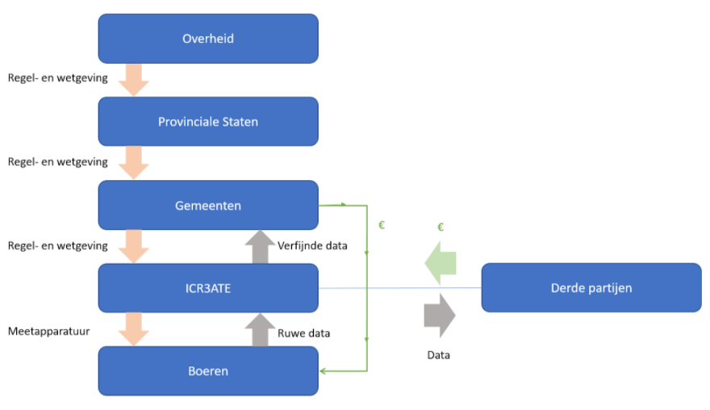

Voor innovatie
In de huidige situatie staat de overheid bovenaan de keten. Zij bepalen de regel- en wetgeving en distribueren taken naar de Provinciale Staten. Vanuit daar worden de regels-
en wetgeving doorgezet naar de gemeenten. De gemeenten kijken naar de middelen van iedere individuele boer. Op basis van deze gegevens worden er vergunningen verstrekt en eventueel
boetes uitgedeeld bij overschrijding van de regels.
Na innovatie
Na de invoering van SennetTa blijft de verhouding tussen de overheid, de Provinciale Staten en de gemeenten hetzelfde. Echter, nu positioneert ICR3ATE zich tussen de gemeenten en de boeren.
De gemeenten geven de regel- en wetgeving door aan ICR3ATE. Zij zullen dit in smart contracts verwerken. ICR3ATE plaatst de meetapparatuur bij de boeren.
Voorheen hield het proces in deze keten op dit punt op. Echter, door de invoering van SennetTa komt er een nieuw proces op gang waarbij er ruwe data op de blockchain van ICR3ATE komt.
Deze ruwe data wordt omgezet in makkelijk te interpreteren data ofwel verfijnde data. Vervolgens gebeuren er twee dingen:
Alle schakels in deze keten behalen in dit geval voordelen. De overheid, Provinciale Staten en Gemeenten krijgen inzichten die onderbouwd zijn met onweerlegbare data, ICR3ATE heeft een nieuw verdienmodel, boeren worden beloond als zij onder de voorgeschreven bovengrenzen blijven, en derde partijen hebben een nieuwe betrouwbare data bron.
Dit systeem kan ook gebruikt worden ter brandpreventie. Wanneer een warmte/temperatuur sensor in een schoorsteen gehangen wordt kan er voortijdig gevaarlijke hitte ontwikkeling gedetecteerd worden en hiermee brand worden voorkomen. Dit concept is aantrekkelijk voor bijvoorbeeld zorgverzekeraars en de brandweer.
ICR3ATE krijgt door de innovatie informatie van boeren die zowel goed als slecht presteren op het gebied van uitstoot. Door te kijken wat de boeren die goed presteren anders doen dan de slecht presterende boeren kan ICR3ATE adviezen verkopen op het gebied van stikstof reducering.
Literatuurlijst
ICR3ATE. (z.d.). Website. Geraadpleegd op 2 oktober 2020, van https://icr3ate.nl/